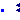
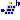
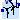
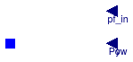
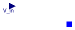

This package contains interfaces and partial models that are inherited by other components
This package contains basic classes that are used to build component models for electrical systems. The classes are not directly usable, but can be extended when building a new model.
Extends from Modelica.Icons.InterfacesPackage (Icon for packages containing interfaces).
| Name | Description |
|---|---|
| Empty connector used by partial models | |
|  CapacitiveLoad | Partial model of a capacitive load |
| Generalized model of a ground connection. | |
| Partial model representing a generalized impedance | |
| Partial model of an inductive load | |
| Load | Partial model for a generic load |
| Model of a generic two port component | |
| Model representing a generic two port system for conversion | |
| Base model for a PV system | |
|  PartialPVOriented | Base model of a PV system with orientation |
| Partial model with basic parameters for PVs | |
| Model of a generic two port component with phase systems | |
|  PartialWindTurbine | Partial model of a wind turbine with power output based on table as a function of wind speed |
| PartialWindTurbineBase | Base class for turbine model that contains basic parameters |
| Partial model of a generic source. | |
| Generalized electric terminal | |
| Partial model of a generic variable voltage source. | |
| PartialAcDcParameters | Partial model that contains basic parameters for a DC/AC conversion system |
| PartialPluggableUnbalanced | Partial interface for unbalanced loads |
Empty connector used by partial models
 Buildings.Electrical.Interfaces.CapacitiveLoad
Buildings.Electrical.Interfaces.CapacitiveLoad
Partial model of a capacitive load

This is a model of a generic capacitive load. This model is an extension of the base load model Buildings.Electrical.Interfaces.PartialLoad.
This model assumes a fixed power factor pf when the flag use_pf_in = false
otherwise it uses the power factor specified by the input pf_in.
The power factor (either the input or the parameter) is used to compute the reactive power
Q given the active power P
Q = - P * tan(arccos(pf))
Extends from Load (Partial model for a generic load).
| Type | Name | Default | Description |
|---|---|---|---|
| replaceable package PhaseSystem | PartialPhaseSystem | Phase system | |
| Terminal | terminal | redeclare Buildings.Electric... | Generalized electric terminal |
| Modelling assumption | |||
| Boolean | linearized | false | If true, the load model is linearized |
| Load | mode | Buildings.Electrical.Types.L... | Type of load model (e.g., steady state, dynamic, prescribed power consumption, etc.) |
| Boolean | use_pf_in | false | If true, the power factor is defined by an input |
| Nominal conditions | |||
| Power | P_nominal | Nominal power (negative if consumed, positive if generated) [W] | |
| Voltage | V_nominal | Nominal voltage (V_nominal >= 0) [V] | |
| Real | pf | 0.8 | Power factor |
| Initialization | |||
| InitMode | initMode | Buildings.Electrical.Types.I... | Initialization mode for homotopy operator |
| Type | Name | Description |
|---|---|---|
| input RealInput | y | Fraction of the nominal power consumed [1] |
| input RealInput | Pow | Power consumed [W] |
| Terminal | terminal | Generalized electric terminal |
| input RealInput | pf_in | Power factor [1] |
Generalized model of a ground connection.

Given a generic electric connector
Buildings.Electrical.Interfaces.Terminal this
model imposes the following condition on the voltage V[PhaseSystem.n]
V = 0,
where 0 is a null vector of length PhaseSystem.n.
| Type | Name | Default | Description |
|---|---|---|---|
| replaceable package PhaseSystem | Buildings.Electrical.PhaseSy... | Phase system | |
| Terminal | terminal | redeclare Buildings.Electric... | Generalized terminal |
| Type | Name | Description |
|---|---|---|
| replaceable package PhaseSystem | Phase system | |
| Terminal | terminal | Generalized terminal |
 Buildings.Electrical.Interfaces.Impedance
Buildings.Electrical.Interfaces.Impedance
Partial model representing a generalized impedance

This model represents a generalized interface for an impedance.
The model has a single generalized electric terminal of type Buildings.Electrical.Interfaces.Terminal that can be redeclared. The impedance can be of different types:
The values of the resistance R, capacitance C and
inductance L can be
specified as parameters of the model.
The values of the resistance R, capacitance C
and inductance L can also be
specified by using the input variables y_R, y_C,
and y_L that are Real values between [0,1].
These input values are enabled by the boolean flags use_R_in,
use_L_in, and
use_C_in.
If the flag use_R_in = true, the value of R is computed as
R = Rmin + yR (Rmax - Rmin)
Extends from Buildings.Electrical.Interfaces.Load (Partial model for a generic load).
| Type | Name | Default | Description |
|---|---|---|---|
| replaceable package PhaseSystem | PartialPhaseSystem | Phase system | |
| Terminal | terminal | redeclare Buildings.Electric... | Generalized electric terminal |
| Boolean | inductive | true | If true, the load is inductive, otherwise it is capacitive |
| Resistance | R | 1 | Resistance [Ohm] |
| Inductance | L | 0 | Inductance [H] |
| Capacitance | C | 0 | Capacitance [F] |
| Modelling assumption | |||
| Boolean | linearized | false | If true, the load model is linearized |
| Load | mode | Buildings.Electrical.Types.L... | Type of load model (e.g., steady state, dynamic, prescribed power consumption, etc.) |
| Initialization | |||
| InitMode | initMode | Buildings.Electrical.Types.I... | Initialization mode for homotopy operator |
| Variable load | |||
| Resistance | |||
| Boolean | use_R_in | false | If true, R is specified by an input |
| Resistance | RMin | 1e-4 | Minimum value of the resistance [Ohm] |
| Resistance | RMax | 1e2 | Maximum value of the resistance [Ohm] |
| Capacitance | |||
| Boolean | use_C_in | false | If true, C is specified by an input |
| Capacitance | CMin | 1e-4 | Minimum value of the capacitance [F] |
| Capacitance | CMax | 1e2 | Maximum value of the capacitance [F] |
| Inductance | |||
| Boolean | use_L_in | false | If true, L is specified by an input |
| Inductance | LMin | 1e-4 | Minimum value of the inductance [H] |
| Inductance | LMax | 1e2 | Maximum value of the inductance [H] |
| Type | Name | Description |
|---|---|---|
| input RealInput | y | Fraction of the nominal power consumed [1] |
| input RealInput | Pow | Power consumed [W] |
| Terminal | terminal | Generalized electric terminal |
| input RealInput | y_R | Input that sepecify variable R |
| input RealInput | y_C | Input that sepecify variable C |
| input RealInput | y_L | Input that sepecify variable L |
Partial model of an inductive load

This is a model of a generic inductive load. This model is an extension of the base load model Buildings.Electrical.Interfaces.PartialLoad.
This model assumes a fixed power factor pf when the flag use_pf_in = false
otherwise it uses the power factor specified by the input pf_in.
The power factor (either the input or the parameter) is used to compute the reactive power
Q given the active power P
Q = P tan(arccos(pf))
Extends from Load (Partial model for a generic load).
| Type | Name | Default | Description |
|---|---|---|---|
| replaceable package PhaseSystem | PartialPhaseSystem | Phase system | |
| Terminal | terminal | redeclare Buildings.Electric... | Generalized electric terminal |
| Modelling assumption | |||
| Boolean | linearized | false | If true, the load model is linearized |
| Load | mode | Buildings.Electrical.Types.L... | Type of load model (e.g., steady state, dynamic, prescribed power consumption, etc.) |
| Boolean | use_pf_in | false | If true, the power factor is defined by an input |
| Nominal conditions | |||
| Power | P_nominal | Nominal power (negative if consumed, positive if generated) [W] | |
| Voltage | V_nominal | Nominal voltage (V_nominal >= 0) [V] | |
| Real | pf | 0.8 | Power factor |
| Initialization | |||
| InitMode | initMode | Buildings.Electrical.Types.I... | Initialization mode for homotopy operator |
| Type | Name | Description |
|---|---|---|
| input RealInput | y | Fraction of the nominal power consumed [1] |
| input RealInput | Pow | Power consumed [W] |
| Terminal | terminal | Generalized electric terminal |
| input RealInput | pf_in | Power factor [1] |
 Buildings.Electrical.Interfaces.Load
Buildings.Electrical.Interfaces.Load
Partial model for a generic load

This model represents a generic load that can be extended to represent either a DC or an AC load.
The model has a single generalized electric terminal of type
Buildings.Electrical.Interfaces.Terminal
that can be redeclared.
The generalized load is modeled as an impedance whose value can change. The value of the impedance
can change depending on the value of the parameter mode, which is of type
Buildings.Electrical.Types.Load:
| Mode | Description | Explanation |
|---|---|---|
| Buildings.Electrical.Types.Load.FixedZ_steady_state | fixed Z steady state | The load consumes exactly the power
specified by the parameter P_nominal.
|
| Buildings.Electrical.Types.Load.FixedZ_dynamic | fixed Z dynamic |
The load consumes exactly the power
specified by the parameter P_nominal at steady state.
Depending on the type
of load (e.g., inductive or capacitive)
different dynamics are represented.
|
| Buildings.Electrical.Types.Load.VariableZ_P_input | variable Z P input |
The load consumes exactly the power specified
by the input variable Pow.
|
| Buildings.Electrical.Types.Load.VariableZ_y_input | variable Z y input |
The load consumes exactly the a fraction of the nominal power
P_nominal specified by the input variable y.
|
It is assumed that the power P of the load is positive when produced
(e.g., the load acts like a source) and negative when consumed (e.g., the
source acts like a utilizer).
The model has a Boolean parameter linearized that by default is equal to false.
When the power consumption of the load is imposed, this introduces
a nonlinear equation between the voltage and the current of the load. This flag is used to
select between a linearized version
of the equations or the original nonlinear ones.
When the linearized version of the model is used, the parameter V_nominal has to
be specified. The nominal voltage is needed to linearize the nonlinear equations.
Note: A linearized model will not consume the nominal power if the voltage at the terminal differs from the nominal voltage.
| Type | Name | Default | Description |
|---|---|---|---|
| replaceable package PhaseSystem | Buildings.Electrical.PhaseSy... | Phase system | |
| Terminal | terminal | redeclare Buildings.Electric... | Generalized electric terminal |
| Modelling assumption | |||
| Boolean | linearized | false | If true, the load model is linearized |
| Load | mode | Buildings.Electrical.Types.L... | Type of load model (e.g., steady state, dynamic, prescribed power consumption, etc.) |
| Nominal conditions | |||
| Power | P_nominal | Nominal power (negative if consumed, positive if generated) [W] | |
| Voltage | V_nominal | Nominal voltage (V_nominal >= 0) [V] | |
| Initialization | |||
| InitMode | initMode | Buildings.Electrical.Types.I... | Initialization mode for homotopy operator |
| Type | Name | Description |
|---|---|---|
| replaceable package PhaseSystem | Phase system | |
| input RealInput | y | Fraction of the nominal power consumed [1] |
| input RealInput | Pow | Power consumed [W] |
| Terminal | terminal | Generalized electric terminal |
 Buildings.Electrical.Interfaces.PartialBaseTwoPort
Buildings.Electrical.Interfaces.PartialBaseTwoPort
Model of a generic two port component

This model declares connectors for electrical components with two terminals.
| Type | Name | Default | Description |
|---|---|---|---|
| BaseTerminal | terminal_n | redeclare Buildings.Electric... | Electric terminal side p |
| BaseTerminal | terminal_p | redeclare Buildings.Electric... | Electric terminal side n |
| Type | Name | Description |
|---|---|---|
| BaseTerminal | terminal_n | Electric terminal side p |
| BaseTerminal | terminal_p | Electric terminal side n |
Buildings.Electrical.Interfaces.PartialConversion
Model representing a generic two port system for conversion
This model extends the base class
Buildings.Electrical.Interfaces.PartialTwoPort
model and declares the variables
v_p and i_p that represents the voltage and the
current at the terminal_p, and the variables
v_n and i_n that represents the voltage and the
current at the terminal_n.
These variables are used in conversion models such as transformers and AC/DC converters.
Extends from Buildings.Electrical.Interfaces.PartialTwoPort (Model of a generic two port component with phase systems).
| Type | Name | Default | Description |
|---|---|---|---|
| replaceable package PhaseSystem_p | PartialPhaseSystem | Phase system of terminal p | |
| replaceable package PhaseSystem_n | PartialPhaseSystem | Phase system of terminal n | |
| Terminal | terminal_n | redeclare replaceable Buildi... | Electric terminal side p |
| Terminal | terminal_p | redeclare replaceable Buildi... | Electric terminal side n |
| Type | Name | Description |
|---|---|---|
| Terminal | terminal_n | Electric terminal side p |
| Terminal | terminal_p | Electric terminal side n |
Base model for a PV system

Partial model of a simple photovoltaic array.
This model computes the power as P=A fact η G, where A is the panel area, fact is the fraction of the aperture area, η is the panel efficiency and G is the total solar irradiation.
Note: This model takes as input the total solar irradiation on the panel. This has to be computed converting the incoming radiation to take tilt and azimuth into account.
The electrical connector is a general electrical interface.
Extends from Buildings.Electrical.Interfaces.PartialPvBase (Partial model with basic parameters for PVs).
| Type | Name | Default | Description |
|---|---|---|---|
| Area | A | Net surface area [m2] | |
| Real | fAct | 0.9 | Fraction of surface area with active solar cells [1] |
| Real | eta | 0.12 | Module conversion efficiency [1] |
| replaceable package PhaseSystem | Buildings.Electrical.PhaseSy... | Phase system | |
| Terminal | terminal | redeclare Buildings.Electric... | Generalized terminal |
| Nominal conditions | |||
| Voltage | V_nominal | Nominal voltage (V_nominal >= 0) [V] | |
| Type | Name | Description |
|---|---|---|
| output RealOutput | P | Generated power [W] |
| replaceable package PhaseSystem | Phase system | |
| input RealInput | G | Total solar irradiation per unit area [W/m2] |
| Terminal | terminal | Generalized terminal |
 Buildings.Electrical.Interfaces.PartialPVOriented
Buildings.Electrical.Interfaces.PartialPVOriented
Base model of a PV system with orientation

Partial model of a simple photovoltaic array.
This model takes as an input the direct and diffuse solar radiation from the weather data bus.
This model computes the power as P=A fact η G, where A is the panel area, fact is the fraction of the aperture area, η is the panel efficiency and G is the total solar irradiation, which is the sum of direct and diffuse irradiation. The model takes into account the location and the orientation of the PV panel, specified by the surface tilt, latitude and azimuth.
Extends from Buildings.Electrical.Interfaces.PartialPvBase (Partial model with basic parameters for PVs).
| Type | Name | Default | Description |
|---|---|---|---|
| Area | A | Net surface area [m2] | |
| Real | fAct | 0.9 | Fraction of surface area with active solar cells [1] |
| Real | eta | 0.12 | Module conversion efficiency [1] |
| replaceable package PhaseSystem | Buildings.Electrical.PhaseSy... | Phase system | |
| Terminal | terminal | redeclare Buildings.Electric... | Generalized terminal |
| PartialPV | panel | redeclare PartialPV panel | PV panel |
| Orientation | |||
| Angle | til | Surface tilt [rad] | |
| Angle | lat | Latitude [rad] | |
| Angle | azi | Surface azimuth [rad] | |
| Nominal conditions | |||
| Voltage | V_nominal | Nominal voltage (V_nominal >= 0) [V] | |
| Type | Name | Description |
|---|---|---|
| output RealOutput | P | Generated power [W] |
| replaceable package PhaseSystem | Phase system | |
| Terminal | terminal | Generalized terminal |
| Bus | weaBus | Weather data |
 Buildings.Electrical.Interfaces.PartialPvBase
Buildings.Electrical.Interfaces.PartialPvBase
Partial model with basic parameters for PVs

This model contains the minimum set of parameters necessary to describe
a PV system.
The model defines also an output P for the power generated by the PVs.
| Type | Name | Default | Description |
|---|---|---|---|
| Area | A | Net surface area [m2] | |
| Real | fAct | 0.9 | Fraction of surface area with active solar cells [1] |
| Real | eta | 0.12 | Module conversion efficiency [1] |
| Type | Name | Description |
|---|---|---|
| output RealOutput | P | Generated power [W] |
 Buildings.Electrical.Interfaces.PartialTwoPort
Buildings.Electrical.Interfaces.PartialTwoPort
Model of a generic two port component with phase systems

This is a model of a component with two electric terminals. It represents a common interface that is extended by other models.
Extends from Buildings.Electrical.Interfaces.PartialBaseTwoPort (Model of a generic two port component).
| Type | Name | Default | Description |
|---|---|---|---|
| replaceable package PhaseSystem_p | Buildings.Electrical.PhaseSy... | Phase system of terminal p | |
| replaceable package PhaseSystem_n | Buildings.Electrical.PhaseSy... | Phase system of terminal n | |
| Type | Name | Description |
|---|---|---|
| replaceable package PhaseSystem_p | Phase system of terminal p | |
| replaceable package PhaseSystem_n | Phase system of terminal n | |
Partial model of a wind turbine with power output based on table as a function of wind speed

Model of a wind turbine whose power is computed as a function of wind-speed as defined in a table.
Input to the model is the local wind speed.
The model requires the specification of a table that maps wind speed in meters per second to generated
power Pt in Watts.
The model has a parameter called scale with a default value of one
that can be used to scale the power generated by the wind turbine.
The generated electrical power is
P = Pt scale
For example, the following specification (with default scale=1) of a wind turbine
WindTurbine_Table tur(
table=[3.5, 0;
5.5, 100;
12, 900;
14, 1000;
25, 1000]) "Wind turbine";
yields the performance shown below. In this example, the cut-in wind speed is 3.5 meters per second, and the cut-out wind speed is 25 meters per second, as entered by the first and last entry of the wind speed column. Below and above these wind speeds, the generated power is zero.

Extends from Buildings.Electrical.Interfaces.PartialWindTurbineBase (Base class for turbine model that contains basic parameters).
| Type | Name | Default | Description |
|---|---|---|---|
| Real | scale | 1 | Scaling factor, used to allow adjusting the power output without changing the table |
| Boolean | tableOnFile | false | true, if table is defined on file or in function usertab |
| Real | table[:, 2] | [3.5, 0; 5.5, 0.1; 12, 0.9; ... | Table of generated power (first column is wind speed, second column is power) |
| String | tableName | "NoName" | Table name on file or in function usertab (see documentation) |
| String | fileName | "NoName" | File where matrix is stored |
| replaceable package PhaseSystem | Buildings.Electrical.PhaseSy... | Phase system | |
| Terminal | terminal | redeclare Buildings.Electric... | Generalized terminal |
| Wind correction | |||
| Real | h | Height over ground | |
| Height | hRef | 10 | Reference height for wind measurement [m] |
| Real | nWin | 0.4 | Height exponent for wind profile calculation |
| Nominal conditions | |||
| Voltage | V_nominal | Nominal voltage (V_nominal >= 0) [V] | |
| Type | Name | Description |
|---|---|---|
| input RealInput | vWin | Steady wind speed [m/s] |
| output RealOutput | P | Generated power [W] |
| replaceable package PhaseSystem | Phase system | |
| Terminal | terminal | Generalized terminal |
Base class for turbine model that contains basic parameters

This partial model contains the minimum set of parameters necessary to describe
a wind turbine.
The model defines also an output P for the power generated by the wind turbine.
| Type | Name | Default | Description |
|---|---|---|---|
| Real | scale | 1 | Scaling factor, used to allow adjusting the power output without changing the table |
| Boolean | tableOnFile | false | true, if table is defined on file or in function usertab |
| Real | table[:, 2] | [3.5, 0; 5.5, 0.1; 12, 0.9; ... | Table of generated power (first column is wind speed, second column is power) |
| String | tableName | "NoName" | Table name on file or in function usertab (see documentation) |
| String | fileName | "NoName" | File where matrix is stored |
| Wind correction | |||
| Real | h | Height over ground | |
| Height | hRef | 10 | Reference height for wind measurement [m] |
| Real | nWin | 0.4 | Height exponent for wind profile calculation |
| Nominal conditions | |||
| Voltage | V_nominal | Nominal voltage (V_nominal >= 0) [V] | |
| Type | Name | Description |
|---|---|---|
| input RealInput | vWin | Steady wind speed [m/s] |
| output RealOutput | P | Generated power [W] |
 Buildings.Electrical.Interfaces.Source
Buildings.Electrical.Interfaces.Source
Partial model of a generic source.
This model represents a generic source.
In case the phase system has PhaseSystem.m > 0 and
thus the connectors are over determined,
the source can be selected to serve as reference point.
The parameters potentialReference and definiteReference are used to define if the
source model should be selected as source for the reference angles or not.
More information about overdetermined connectors can be found
in Olsson Et Al. (2008).
Hans Olsson, Martin Otter, Sven Erik Mattson and Hilding Elmqvist.
Balanced Models in Modelica 3.0 for Increased Model Quality.
Proc. of the 7th Modelica Conference, Bielefeld, Germany, March 2008.
| Type | Name | Default | Description |
|---|---|---|---|
| replaceable package PhaseSystem | Buildings.Electrical.PhaseSy... | Phase system | |
| Terminal | terminal | redeclare Buildings.Electric... | Generalized terminal |
| Reference Parameters | |||
| Boolean | potentialReference | true | Serve as potential root |
| Boolean | definiteReference | false | Serve as definite root |
| Type | Name | Description |
|---|---|---|
| replaceable package PhaseSystem | Phase system | |
| Terminal | terminal | Generalized terminal |
Generalized electric terminal
This connector represents a generalized electric terminal. The generalization is made possible by the
replaceable package
Buildings.Electrical.Interfaces.Terminal.PhaseSystem.
The package PhaseSystem can be one of the packages contained in
Buildings.Electrical.PhaseSystems.
Using this approach allows to represent DC, single phase AC and
multi phases balanced and unbalanced AC systems with the same connector.
This connector is compatible with the following Modelica libraries:
The connector is overdetermined since the number of effort variables
is higher than the number of flow variables.
This happens when the phase system has a number of reference angles
PhaseSystem.m > 0.
The over-determined connectors are defined and used in such a way
that a Modelica tool is able
to remove the superfluous but consistent equations arriving
at a balanced set of equations, based on a
graph analysis of the connection structure.
The models have to use ad-hoc constructs specified by the Modelica language to handle this situation.
More information can be found in Olsson Et Al. (2008).
More details about the generalized electrical terminal can be found in Franke and Wiesmann (2014).
Hans Olsson, Martin Otter, Sven Erik Mattson and Hilding Elmqvist.
Balanced Models in Modelica 3.0 for Increased Model Quality.
Proc. of the 7th Modelica Conference, Bielefeld, Germany, March 2008.
Ruediger Franke and Hansjurg Wiesmann.
Flexible modeling of electrical power systems - the Modelica PowerSystems library.
Proc. of the 10th Modelica Conference, Lund, Sweden, March 2014.
Extends from Buildings.Electrical.Interfaces.BaseTerminal (Empty connector used by partial models).
| Type | Name | Default | Description |
|---|---|---|---|
| replaceable package PhaseSystem | PhaseSystems.PartialPhaseSys... | Phase system | |
| Type | Name | Description |
|---|---|---|
| replaceable package PhaseSystem | Phase system | |
| Voltage | v[PhaseSystem.n] | Voltage vector [V] |
| flow Current | i[PhaseSystem.n] | Current vector [A] |
| ReferenceAngle | theta[PhaseSystem.m] | Optional vector of phase angles [rad] |
 Buildings.Electrical.Interfaces.VariableVoltageSource
Buildings.Electrical.Interfaces.VariableVoltageSource
Partial model of a generic variable voltage source.

This model represents a generic variable voltage source. The model has a boolean
flag use_V_in, when this flag is equal to true
the voltage of the source is imposed by the input variable V_in.
When the flag is equal to false the voltage source is equal to the parameter V.
In case the phase system adopted has PhaseSystem.m > 0 and
thus the connectors are over determined,
the source can be selected to serve as reference point.
The parameters potentialReference and definiteReference are used to define if the
source model should be selected as source for the reference angles or not.
More information about overdetermined connectors can be found
in Olsson Et Al. (2008).
Hans Olsson, Martin Otter, Sven Erik Mattson and Hilding Elmqvist.
Balanced Models in Modelica 3.0 for Increased Model Quality.
Proc. of the 7th Modelica Conference, Bielefeld, Germany, March 2008.
Extends from Buildings.Electrical.Interfaces.Source (Partial model of a generic source.).
| Type | Name | Default | Description |
|---|---|---|---|
| replaceable package PhaseSystem | OnePhase | Phase system | |
| Terminal | terminal | redeclare Buildings.Electric... | Generalized terminal |
| Boolean | use_V_in | true | If true, the voltage is an input |
| Voltage | V | 1 | Value of constant voltage [V] |
| Reference Parameters | |||
| Boolean | potentialReference | true | Serve as potential root |
| Boolean | definiteReference | false | Serve as definite root |
| Type | Name | Description |
|---|---|---|
| Terminal | terminal | Generalized terminal |
| input RealInput | V_in | Input voltage [V] |
Partial model that contains basic parameters for a DC/AC conversion system
This model contains the minimum set of parameters necessary to describe an AC/DC converter.
| Type | Name | Default | Description |
|---|---|---|---|
| AC-Conversion | |||
| Real | pf | 0.9 | Power factor |
| Real | eta_DCAC | 0.9 | Efficiency of DC/AC conversion |
Partial interface for unbalanced loads
This record contains a set of parameters that are used when modeling three-phase unbalanced systems. The record contains three boolean flags that are used to determine which of the three-phase are connected to the network.
| Type | Name | Default | Description |
|---|---|---|---|
| Boolean | plugPhase1 | true | If true, phase 1 is connected |
| Boolean | plugPhase2 | true | If true, phase 2 is connected |
| Boolean | plugPhase3 | true | If true, phase 3 is connected |